GIF du vrai moteur. Meme case de l'arbre, memes frames et degats. A gauche AVANT (version precedente), a droite APRES.
Charge d'epaule : epaule avant, jambe arriere qui pousse, le contact vient de l'epaule.
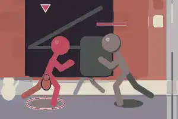
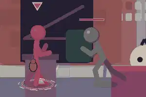
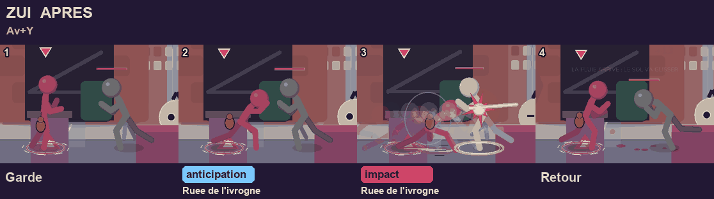
Plus de retournement : penche en avant, mains au sol, jambe arriere tendue.
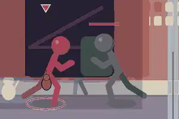
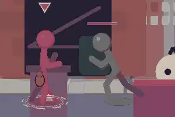
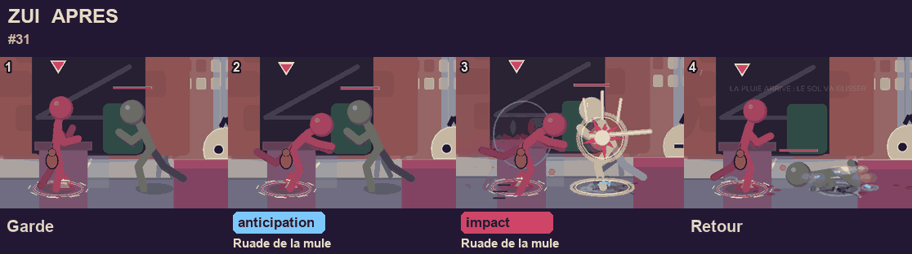
Plus de retournement : bras en ailes, pantoufle droit en arriere.
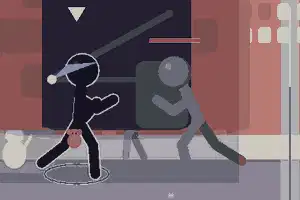
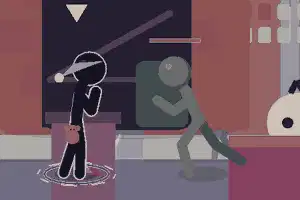
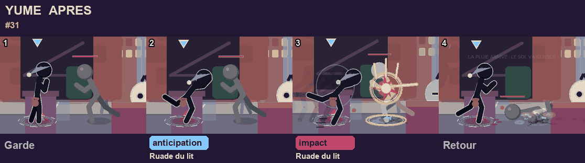
Elle saute apres l'adversaire projete (genou ramene), puis plonge coude en avant.
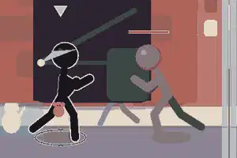
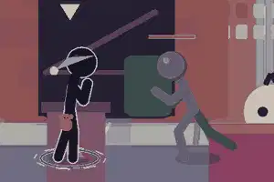
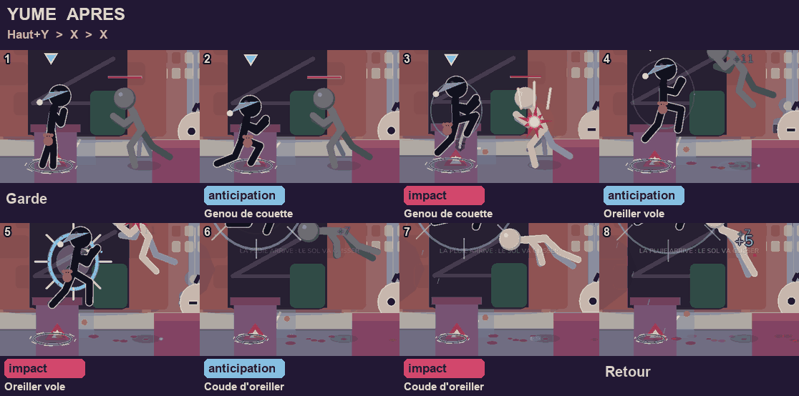
Buste presque horizontal, mains vers le sol, jambe arriere tendue : on lit une ruade.
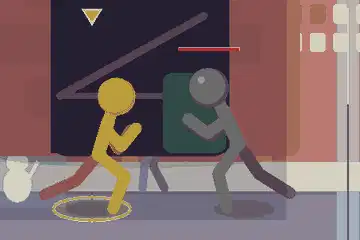
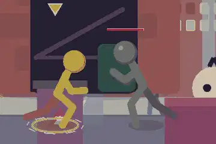
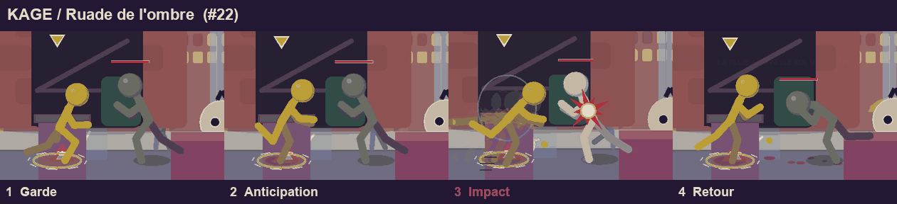
Charge profonde puis detente totale : talons decolles, poing au menton, buste renverse.
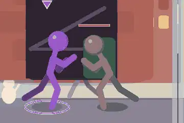
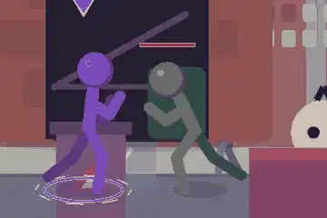
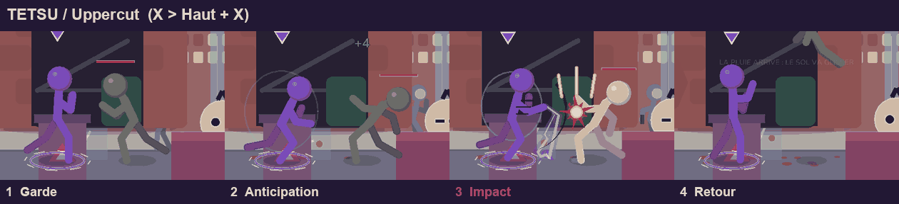